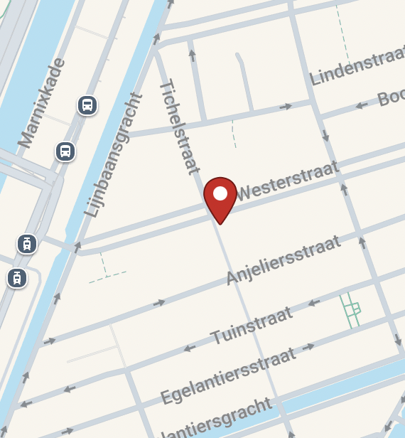

Green Farmers
Green Farmers is het restaurant waarop De Natuur Gril gebasseerd is. Zij hebben een grote variate van overheerlijke vegan burgers, healthy smoothies en nog veel meer. Het is zeker een plek die jij moet bezoeken!
Wees er gauw bij aan de Westerstraat 189, MA Amsterdam 1015

Gezondheid
Wist jij dat een plant gebasseerde dieet jouw gezondheid kan verbeteren?
- Het verkleint de kans op hart- en vaatziekten
- Minder risico op kanker
- Verlaagde kans op diabetes
Milieu
Wist je dat veganist zijn bijdraagt aan het milieu beschermen?
Tijdens de bereiding van plantaardige producten worden er veel minder broeikasgassen uitgestoten dan bij vlees producten.
Ook hierbij help je de dieren die geen leven hoeven te lijden in een kooi, met als enige bedoeling om geslacht te worden.
Waarom vegan?
Ik heb gekozen om de nadruk te leggen op veganisme, omdat dit voor mij betekent dat er geen dieren hoeven te lijden voor ons plezier. Nadat ik enkele maanden geleden een filmpje zag over hoe er geweld werd gebruikt op de dieren, wekte het iets in mij op dat ik liever eerder gezien had.